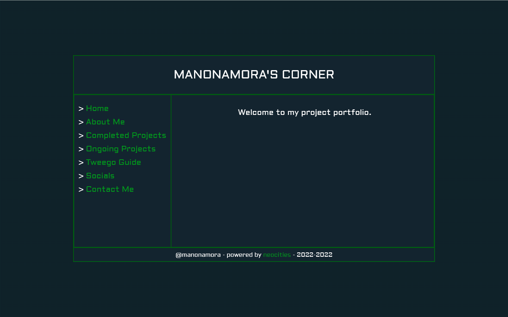
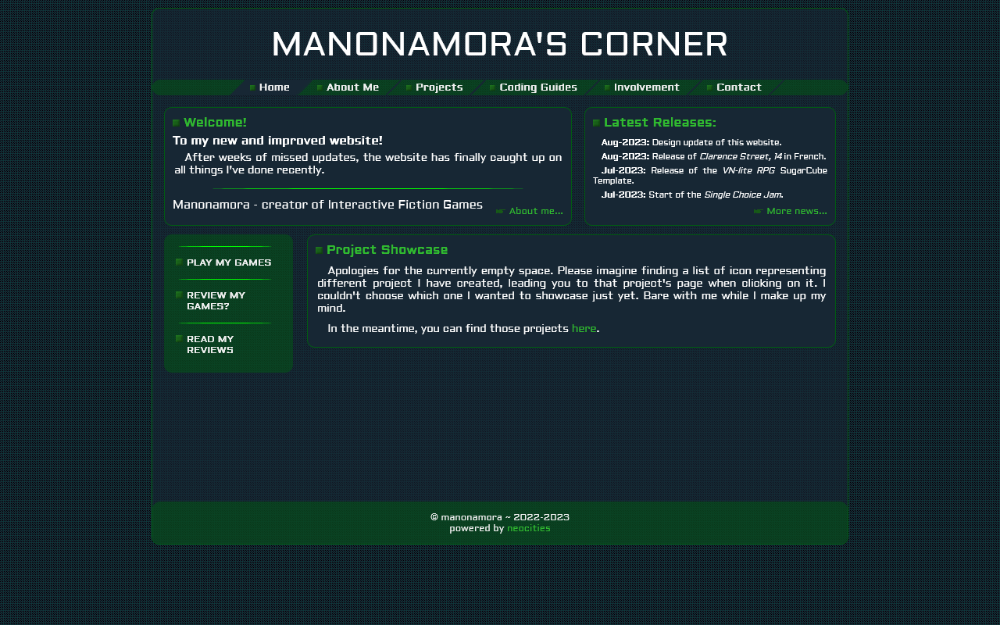
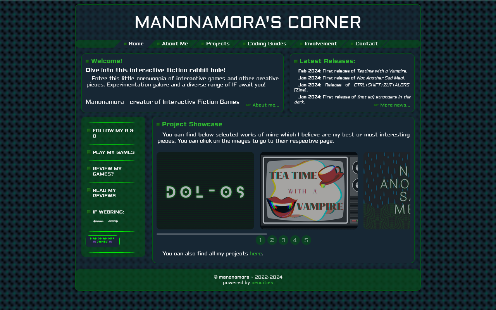

Notes on V3.0
Written: 2025-05-20
The website-version of getting a needed haircut
Version 3.0 is now live!
... or it will be soon enough. I still have an arm-length list of things to do before it's publishable.
TLDR: a little retrospective on the different versions of this website, and why it had to change. This new eclectic collection of pages showing more of me, in a way that makes me excited about creating.
This was a long time coming. This website hadn't been updated in a year: it was riddled with typos, links going nowhere or to the wrong place, information long false or wrongly communicated. All around a yucky experience. Really not how I want it to be remembered.
The more dramatic reason for this major change stem from a lot of things IRL changing in the past year, making me reflect on things, re-prioritise what is important to me, and be a more authentic both IRL and online. This space is woefully incomplete in that regard, and in turns, doesn't really feel like me. Just a sanitised impersonal account of what I do, not who I am.
Ironically, one of the reasons I feel this way comes from the interface of this website itself.
V1 was my baby attempt at making a website without a template/builder: simple interface with minimal blocks and a basic palette. It only had a title, a side-menu with links to sections, and some basic information. It helped that I hadn't released too much then.
As time went on, I released more games, became more involved in the IF community, and continued to hone my coding skills (esp. UI-wise), the simple V1 became too cluttered with information and links. Still keeping the same palette and the retro-vibe, I thought of what I wanted displayed on screen and reorganised accordingly.
V2 was released in 2023 with a more complex interface and smoother transitions. It displayed more information and steered visitors better towards relevant places.
But it wasn't really complete - the showcase section wasn't coded because I didn't know how I wanted it to look like. Only some months later did I sit down and made it work. V2 would then only be updated a couple more times to include more releases.
As it started looking better, V2 lost track of my reason to create a website here: doing stuff from scratch. While inspired by the 2000-2010 era French Governmental Agency style of interface (for the retro-vibe), I used the Centre National de Ressources Textuelles et Lexicales's abandoned website as a template for V2, instead of doing it in my own sauce. Even with the changes and update to the code... under the hood, it's obvious it didn't meet the 'doing it scratch' criterium.
It really is no wonder I was unhappy with the website: putting a new coat of paint on a vibe that wasn't even matching my own to begin with, just because I was nostalgic about the late 200s... this was never going to work. What as I thinking? I'm not government?! The cold and basic vibes would never be me!
And so we arrive to V3. The much needed departure from V2. The return to 'doing it from scratch'. A tabula rasa for a new clean start.
To make sure this new version would be successful and actually feel like me, I gave myself some guidelines.
For one, trash it all and start again. I create a new folder on my computer, made a new index.html and reorganised the whole directory. Well, except one: the only code kept from the previous version was the Releases and Updates page (still re-coded)
For two, how does [thing] represent me? I re-defined what a personal website meant to me, what it would say about me, what about me it would share. Not just manonamora the IF creator, but Manon-as-a-whole. Through it might still be IF-heavy at the start.
For three, from scratch but with a plan. I mocked up every interface on paper, either drawing them fully or described in details in notes. From the vibes I wanted to achieve with each page or the inspirations for the UI. That way I can go back to those notes when I feel lost.
For four, every page is special and still me. Every section and page should have its own vibe and/or interface, and still relate to me. Whether it's: the 90s kid using Win98 and discovering of the magical Web 1.0, the awkward teen who found creative outlets in forums and fandoms of the 00s and yearned to be y2k cool, the nerdy adult who discovered game-making and a passion for web-design, the random internet user looking for connections and exchanges, the gourmande foodie who's stomach always inspires, the music lover all about vibes, the brain with a lackluster memory when it comes to names, the fan of impressionism and romanticism, etc...
Except a shortcut with game pages: the code of most of the UIs is from the respective game's interface, based on/simplified from it, or inspired by it. Because it should be more about the game.
For five, when in doubt, stick to basics. V2 had 26 standardised game pages, while V3 had planned 40 custom ones (with only a quarter properly mocked-up). So I made myself a quick template, to ensure that the information for all games can still be put online quickly, even if the wanted interface is not ready (or I end up not having an idea). It will be also helpful for future release, and helping me updating the website quicker.
For six, transfer and update first, expand later. The main goal of V3 was to make sure the information of the website was up-to-date (especially game releases), with a new interface and organisation which would allow me to expand the website to other interests. So I made myself a To-Do list, forcing me to stick to the basic update and listing what I can do to improve for V3.1+. whatever extra I still manage to do will be a huge win for me.
And finally, keep track of everything. I created a Colophon page, which lists all the programs used to make the website and its assets, the sources of non-made assets (icons, fonts, bgs), the sources of bits of codes when I couldn't figure it out, and the things and places that inspired me.
And here we are. At the end. And the beginning. V3 is here, and still in construction. A new version, and also an actually-me version. An eclectic collection of pages, each having a little part of me. A space that won't be a shrine to one interest, but snippets of many. A garden that can grow in any direction, wherever this journey takes me.
Honestly, it's been pretty freeing and exciting to start anew, with this fresh perspective on this space. I can see clearly what I want to do with this space. And I'm thrilled to see where I end up with it. It's also unlocked my writer's block, so yay!
Welcome... to manonamora's computer. I hope you have fun opening all the folders and exploring this space!